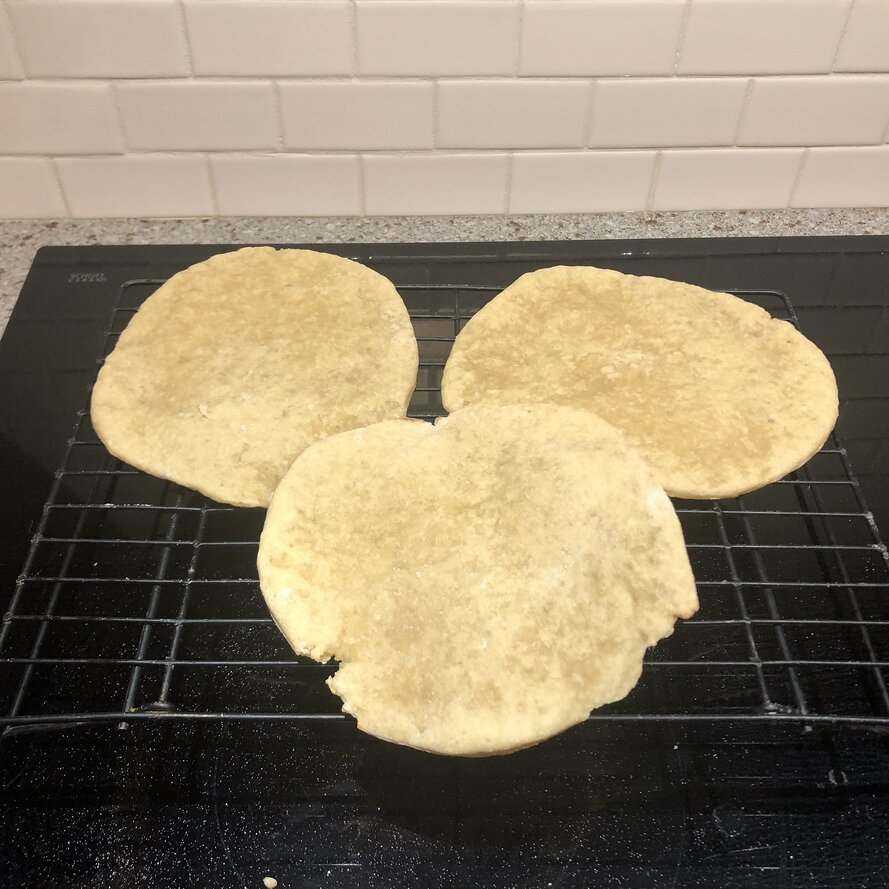

Gluten Free Pita Bread

Description
Bake this perfect gluten-free pita bread from scratch with a
few simple ingredients. A wonderful gluten-free alternative
for sandwiches and snacks.
Ingredients
- 1 1/4 cups gluten free oat flour
- 1/2 cup potato starch
- 1/3 cup cornstarch
- 1/3 cup tapioca flour
- 2 tablespoons xanthan gum
- 1 tablespoon active dry yeast
- 1 teaspoon white sugar
- 1 teaspoon salt
- 1 cup warm milk
- 1 egg
- 1/4 cup olive oil
- 1 teaspoon apple cider vinegar
Steps
- Combine oat flour, potato starch, cornstarch, tapioca flour,
xanthan gum, yeast, sugar, and salt in the bowl of a stand mixer;
whisk until well mixed, about 1 minute.
- Whisk milk, egg, olive oil, and vinegar together in a separate
bowl until well combined, about 1 minute. Stir milk mixture in
gradually to the flour mixture on low speed; mix until a soft
dough comes together, about 5 minutes.
- Line 2 baking sheets with parchment paper. Divide dough into 6 equal pieces;
roll each piece on a floured surface to a 6-inch circle. Place on the prepared baking sheets;
cover with plastic wrap and set aside for 1 to 1 1/2 hours.
- Preheat the oven to 450 degrees F (230 degrees C). Heat a pizza stone in the oven.
- Spray pita breads with water and place them straight on the hot pizza stone.
- Bake in the preheated oven until puffed and lightly golden, 5 to 7 minutes.